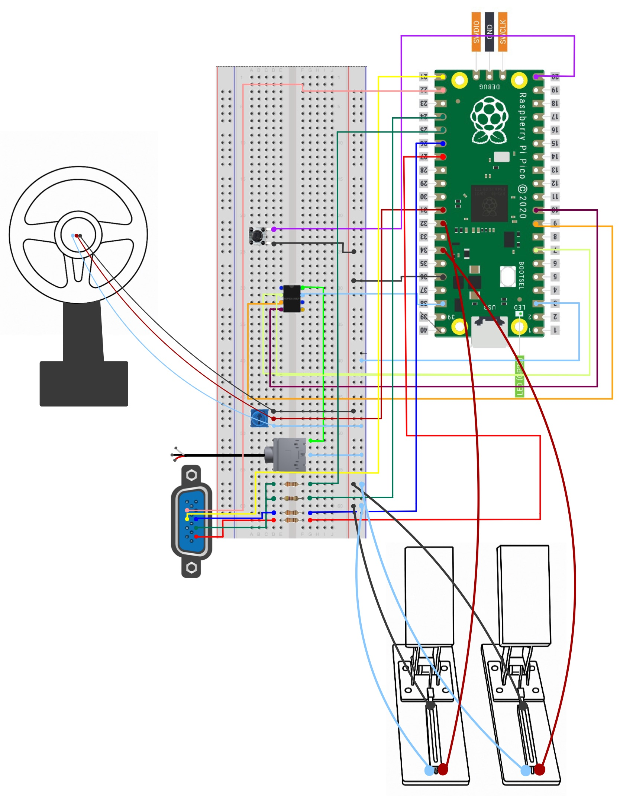

Project Introduction
For our final project, we created our own Mario Kart–inspired racing game using the RP2040. To bring it to life, we 3D printed a steering wheel, used foot pedals connected to potentiometers for analog control, and animated everything using VGA graphics. We can use foot pedals to accelerate or break. Watch out though, if you don't step on the acclerator for a while then your speed will go down automatically. Like the original, our version features power ups, but with a Cornell twist. Hit the iconic clock tower bell to activate a speed boost. Drive through Martha’s weather machine (a pumpkin) to change the time of day. Want invincibility? Grab our dragon, power up. But watch out: just like in Mario Kart, we’ve got obstacles too. Cows, bears, and bananas will drop your velocity to zero and push you back. Survive 3 laps of chaos and you're crowned champion!
We chose this project because Mario Kart was a shared childhood memory, one full of laughter, chaos, and shouting at friends. We wanted to recreate that joy from scratch on the RP2040 microcontroller. By combining physical controls, real-time rendering, sound, and a touch of Cornell-themed humor, we aimed to build an immersive, nostalgic experience that feels both familiar and uniquely ours!
Also fun fact: we chose a dragon because of Cornell's Dragon Day.

High-Level Design
Inspiration & Rationale
We first drew our inspiration from the game Mario Kart. To look for further inspiration and sources, we decided to see previous projects to see if anyone has done something similar. We saw a previous project and were very inspired by it as it contained a lot of components that we wanted. We used it as an outline of what we wanted and how to get there. Inspired by these things, our objective was to create an embedded experience that feels arcade-quality using only a microcontroller.
Drawing the Mario Kart game and racing games in general, we wanted to accelerate, brake, and steer. These are just handy components that any racing games need. Drawing specifically from Mario Kart we wanted 2 things: powerups and obstacles. For our powerups we thought of the iconic ones in Mario Kart: speed boost and invincibility. As for obstacles we had more freedom and wanted to make some of them cornell specific. For example, we wanted a bear to represent our Big Red Bear!
Background Math – Collision detection
The collision detection system checks whether the player's kart intersects with any active obstacles or power ups on the road. This is achieved using axis-aligned bounding box (AABB) collision logic.
Mathematical Description
Let the kart's bounding box be defined as:
- Left: x_k
- Right: x_k + w_k
- Top: y_k
- Bottom: y_k + h_k
Where x_k is the karts top left x-coordinate, y_k is the karts top left y-coordinate, w_k is the width of the kart, and h_k is the height of the kart
Let the obstacle’s bounding box be defined as:
- Left: x_o
- Right: x_o + w_o
- Top: y_o
- Bottom: y_o + h_o
These are similar variables as the kart
A collision occurs if and only if both of the following are true:
x_k + w_k ≥ x_o AND x_k ≤ x_o + w_o (horizontal overlap)
y_k + h_k ≥ y_o AND y_k ≤ y_o + h_o (vertical overlap)
This is implemented as:
bool x_overlap = !(kart_right < obj_left || kart_left > obj_right);
bool y_overlap = !(kart_bottom < obj_top || kart_top > obj_bottom);
return x_overlap && y_overlap && !racer.invincible;
Design Considerations
- The bounding boxes are dynamically scaled based on perspective (objects further away are smaller).
- Collisions are only registered when obstacles are within a certain vertical range (e.g., below y=350) to avoid premature detection.
- Power ups and obstacles are handled separately—colliding with power ups applies effects, while hitting obstacles penalizes the player.
- Objects are deactivated once a collision is detected to avoid multiple triggers per frame. It is reactivated after it bounces backwards.
Background Math – Road Curvature
To simulate the effect of a dynamically curving road in real time, we use a sine wave based function that
determines the horizontal shift of the road at each vertical screen line. For any scanline y, the
curve offset is computed as:
curve = amplitude * sinf(curve_phase + 2(PI) * (y + road_scroll) / CURVE_PERIOD);
The amplitude controls the strength of the curve, and curve_phase increases slightly
every frame to give the illusion of road movement over time. This function is evaluated once per scanline and is
responsible for generating left and right edge positions that define the road shape.
We also apply a perspective effect using a quadratic scaling function based on each line’s distance from the horizon. This gives the appearance of depth, with the road widening toward the bottom of the screen:
progression = (y - SKY_HEIGHT) / (VGA_HEIGHT - SKY_HEIGHT);
perspective_scale = min_scale + (1.0 - min_scale) * progression^2;
road_width = base_width * perspective_scale;
These calculations are used not only for rendering the road itself, but also to ensure that other elements in
the scene such as power ups, obstacles, and even the kart stay visually locked to the road. For example, we use
the same getRoadCurve() function in our obstacle logic to shift objects slightly in the direction
of the curve as they move down the track. Similarly, the kart’s x-position is bounded within the computed road
edges at its y-position, ensuring the player can only steer within the valid playable area regardless of how the
road curves.
Over the course of a lap, the amplitude value changes to simulate different driving sections. From
10k–20k units of distance, the curve gradually increases for gentle turns; from 20k–30k, it reaches a tighter
maximum; and after 50k, it begins to return to a flat road by decreasing the amplitude back to zero. This
control over curvature progression allows us to design a lap with varied road conditions, all handled
procedurally with minimal computation per frame.
Overall, the road curvature math forms the backbone of both the game’s visual style and its object interaction logic. It allows us to render smooth, animated road movement and ensures all gameplay elements are spatially consistent with the track.
Background Math – Scaling
To simulate a realistic 3D racing perspective on a 2D VGA display, we use a combination of perspective scaling and nonlinear progression-based transformations to draw the road and objects.
1. Perspective Scaling
Each horizontal scanline of the road uses a scaling factor based on how far down the screen (y-position) it is. The progression value is computed as:
progression = (y - SKY_HEIGHT) / (VGA_HEIGHT - SKY_HEIGHT)This value lies in [0, 1] and gets squared to exaggerate the perspective:
perspective_scale = min_scale + (1 - min_scale) * (progression)^2The result is a wider road near the bottom (closer to the player) and narrower at the horizon, imitating depth.
2. Road Width
The width of the road is dynamically scaled each frame:
road_width = base_road_width * perspective_scale
Dashes and center lines also use dash_length and dash_gap scaled by this factor to
maintain consistency.
3. Object Scaling
Objects like power ups and obstacles are also scaled by a linear function of progression:
object_scale = 0.2 + progression * 2.0This ensures distant objects appear smaller and grow larger as they approach the player, enhancing the 3D illusion.
Gameplay
We first start off our system by having our start screen. We included this because it would feel unnatural if the player couldn't start the game at ease. It is also nice art to look at! During this time, the code is in a while loop that won't break until the button is pushed. This button is connected to the breadboard and is not on the Pico itself. To generate the image, we used an online python script.
Once the start button is pressed, the program launches core1_entry() using
multicore_launch_core1(). This initializes core 1, which is responsible for
all
main gameplay threads. Specifically, it runs protothread_vga for rendering the road, kart, and
game
objects; protothread_stats for handling the HUD and pedal input; and
protothread_background for managing environmental effects like clouds, road shaping, and
obstacle
spawning.
Meanwhile, core 0 handles just one thread: protothread_sfx, which is
responsible
for streaming audio samples to the DAC in real-time. This separation allows the audio system to run without
interruption or frame stutter, while core 1 handles the more computationally demanding game logic and
rendering.
We then start at the beginning of our lap and start our adventure! Note that a lap is 80k units. Everytime we update the distance we update it based off of the racer's current velocity. The reason why we have such large units is because the distance is being updated almost every frame! In figure 1, you see a cow approaching. Notice how it is small. This shows the effectiveness of our scale funciton.
Overall,main() ensures all peripherals are configured, shows the intro screen, waits for player
input, then splits the workload: core 0 handles audio via a dedicated sound thread, while
core 1 handles all gameplay, rendering, and input logic.
Power ups & Obstacles
Speaking of objects, let us now move on to all the possible sprites that could be on the road and what they do. Throughout the course, the player can interact with both helpful power ups and dangerous obstacles. These elements add dynamic gameplay.
Power ups
- Martha's weather machine (Pumpkin): Triggers a weather change (Morning → Sunset → Night → Morning), updating the background and visuals. Effect lasts temporarily before resetting back to Morning.
- Speed (Bell): Instantly boosts the kart’s velocity to its maximum. This speed-up effect is time-limited.
- Invincible (Dragon): Grants temporary invincibility. While active, collisions with obstacles no longer affect the player.
Obstacles
- Cow: Causes a minor setback by pushing the object upward and subtracting 5 units from your distance.
- Bear: Removes 10 units from distance and pushes the obstacle away.
- Banana: This obstacle deducts 15 units from distance.
In addition to these penalties, the racers velocity will turn to 0.
Design Tradeoffs
- Performance vs Quality: We implemented selective per scanline redrawing and persistent state arrays to avoid full screen redraws. While we initially wanted to add more obstacles, we found that increasing the number of draw/erase operations per frame caused significant VGA flickering and reduced the overall framerate. The VGA display, being driven entirely in software, became a bottleneck when too many pixels were updated each frame. As a result, we carefully balanced the number of on-screen objects to maintain smooth gameplay without overwhelming the system’s rendering capacity.
- Memory Management: Sprite data is statically compiled, and DMA buffers are carefully bounded to avoid fragmentation. To efficiently render complex shapes without allocating per pixel color data, we used bitmasks for all our sprites. This allowed us to encode each sprite’s shape compactly, using only 1 bit per pixel to indicate transparency vs. color presence. During rendering, we scanned each bit and only drew pixels where the bit was set, minimizing draw calls and saving both memory and compute time. This was critical to keeping the frame rate high while maintaining visual variety.
- Concurrency: We used semaphores and separate cores to decouple rendering from logic for increased responsiveness.
Program/Hardware Design
Software Components
The software architecture of PicoKart is designed to be modular and extensible. It implements a Cornell-themed racing game on the Raspberry Pi Pico using VGA output and SPI-based audio. The main components include:
- VGA Graphics: A VGA driver renders graphics at 640×480 resolution with a 16-color palette. The graphics engine is optimized for scanline rendering, enabling smooth animations and dynamic road generation with perspective effects.
- Audio Playback: High-quality sound is achieved through SPI communication with an external DAC. The audio engine supports both background music and sound effects.
- Input Handling: The system processes analog inputs from pedals and digital button inputs, using filtering and debouncing to ensure smooth and responsive control.
-
Game Logic: Core gameplay features include:
- Player-controlled kart with collision detection
- Multiple obstacle types (cows, bears, bananas)
- Power ups (speed boost, invincibility)
- Lap tracking and race progression
- Weather and day/night cycle system
- Pedal-based acceleration and braking
The software is structured around a protothread model, allowing concurrent execution of multiple tasks while maintaining low overhead. This architecture enables smooth gameplay and responsive controls even under heavy load. Protothreads simplify the management of timing-sensitive tasks, such as audio playback and graphics rendering, allowing them to run in parallel without blocking each other.
The system is modular, with clear separation between components, allowing easy updates and modifications without affecting overall functionality. This modularity also facilitates testing and debugging, as each component can be developed and tested independently.
Leveraging the RP2040’s dual-core architecture enables efficient parallel processing: one core is dedicated to graphics rendering and game logic, while the other core handles audio playback. This separation ensures a high frame rate and low latency, even during complex scenes with multiple objects and effects.
Robustness and reliability are built in, with safety mechanisms to prevent crashes and undefined behavior. All critical variables use saturated arithmetic via clamped macros, and input values are validated to avoid unexpected behavior. The use of DMA buffers and hardware semaphores ensures the system can handle multiple tasks simultaneously without deadlock or resource contention.
Next, we will dive deeper into each function and how they work. We will detail the implementation of VGA graphics, how the VGA library facilitated this, and discuss issues we encountered along the way as well as creative solutions we devised to overcome them.
Main Function
The main() function serves as the core system initializer and orchestrator,
setting up all critical hardware peripherals and launching the cooperative multithreading
environment that powers PicoKart’s audiovisual and gameplay features.
Design Choices and Motivation:
We designed the system with the player experience in mind, starting with a dedicated start screen to help players understand the game before jumping in. Additionally, we leveraged the RP2040’s dual-core architecture from the beginning, drawing from lessons learned in Lab 2’s Galton Board project. There, we observed significant timing delays caused by the combination of CPU-intensive computations and sprite redraw operations, which slowed down the frame rate and caused visible flickering.
By adopting a dual-core architecture, we were able to offload the VGA rendering and animation tasks to Core 1, while Core 0 handled audio synthesis, game logic, and input polling. This separation minimized the flickering issues seen in Lab 2 and reduced timing errors that previously forced us to avoid using floating-point operations extensively in the real-time program. This architecture ensures smoother graphics updates and more stable game timing overall.
Peripheral Initialization:
- VGA output is configured to support a 640×480 display resolution, where the initial intro image is drawn pixel-by-pixel, establishing the graphical foundation.
- I2C is initialized for sensor communication, mapping SDA and SCL pins accordingly.
- PWM peripherals are set up on dedicated GPIOs with interrupt-driven timing for smooth control of analog inputs or outputs such as pedals or motors.
- ADC channels are initialized and mapped to specific GPIOs to read pedal positions, including oversampling for noise reduction.
- GPIO pins are configured for general input (e.g., a physical start button) and output (e.g., signaling or LED control).
SPI and DMA Setup for Audio:
The SPI peripheral is initialized at 20 MHz in 16-bit mode to communicate with an external DAC. Two DMA channels are configured: a control channel and a data channel. The data channel streams a precomputed sine wave lookup table to the DAC via SPI, producing smooth, continuous audio output with minimal CPU overhead. The DMA timing is precisely controlled with a hardware timer to ensure consistent sample rates (~44 kHz), critical for audio fidelity.
Startup Gating Mechanism:
The system waits in a loop for a physical button press to ensure all hardware components are stable before starting gameplay. This guarantees no premature execution occurs while peripherals are still initializing.
Dual-Core Multithreading:
The RP2040’s second core (Core 1) is reset and launched to run critical VGA rendering and background animation threads. Meanwhile, Core 0 schedules audio synthesis, game logic, and input polling threads, using a lightweight protothread scheduler for cooperative multitasking. This design leverages parallel processing to maintain smooth frame rates and responsive input handling, even under complex rendering and audio workloads.
Dual-Core Task Distribution
| Core | Responsibilities |
|---|---|
| Core 0 |
Audio synthesis, game logic, input polling, and scheduling cooperative multitasking using
protothreads. Manages core gameplay functionality and user interaction. |
| Core 1 |
VGA rendering, background animation, and graphics refresh tasks. Offloads intensive display operations to ensure smooth frame rates and reduce flickering. |
Overall Architecture:
The main() function lays the groundwork for a low-latency, concurrent game runtime by
combining optimized hardware peripheral setup, precise DMA and interrupt-driven data streaming,
and balanced task partitioning across the RP2040’s dual cores.
From there, the system is divided into multiple protothreads:
Sound Playback Implementation: write_dac() and protothread_sfx()
Our audio subsystem employs a carefully crafted protothread-based approach to output continuous digital audio samples to an external DAC. The chosen soundtrack is the Cornell fight song, which complements the game’s fast-paced, competitive atmosphere with an upbeat and motivating rhythm. Note that this song is not copyrighted and is available for the general public.
Background music: Listen on YouTube
Detailed write_dac() Function Workflow
The write_dac() function orchestrates low-level communication with the DAC via SPI, ensuring
precise timing and data integrity critical for artifact-free sound:
- Combines DAC channel configuration bits with a 12-bit audio sample, masking extraneous bits.
- Activates the DAC by pulling the chip select (
PIN_CS) pin low before transmission. - Sends the 16-bit data word to the DAC using a blocking SPI transmission, guaranteeing completion before proceeding.
- Deactivates chip select to end communication.
- Generates a pulse on the
LDACline to latch the new data into the DAC’s output register, minimizing latency.
This design ensures tight synchronization between data transfers and DAC updates, preventing glitches or audio artifacts.
protothread_sfx(): Cooperative Audio Streaming
The protothread model is leveraged to stream audio data continuously without blocking other critical game processes:
- Iteratively calls
write_dac()with samples from thesfxbuffer, representing the digitized fight song. - Manages sample index wrap-around to loop the sound effect seamlessly.
- Incorporates a precise
PT_YIELD_usec(12)delay to approximate the 44.1 kHz standard audio sample rate.
Technical Challenges and Design Decisions
- Memory Constraints: The RP2040’s limited flash memory (~2 MB) constrained the maximum audio length. We selected the most impactful ~500,000 bytes segment of the fight song to fit within this limit.
- Audio Conversion Pipeline: Utilized an external script chain to convert original MP3 files into WAV format, then resampled to 44.1 kHz mono WAV files compatible with DAC playback.
- Timing Optimization: Fine-tuned the microsecond yield delay in
protothread_sfx()to balance CPU time slices, prevent sample underrun, and eliminate audio static or noise. - Feature Trade-offs: While initial plans included event-triggered sound effects (e.g., cow hit sounds), these were deprioritized due to their impact on timing consistency and a desire to focus resources on complex visuals and smooth continuous music playback.
Low-Level Audio DAC Interface and Playback Thread
| Component | Technical Description and Functional Role |
|---|---|
| `write_dac(uint16_t data, uint16_t channel_bits)` |
Implements a low-level SPI protocol transaction to dispatch a 16-bit word encoding a 12-bit audio sample
and DAC channel selection.
|
| `protothread_sfx(struct pt *pt)` |
Implements a protothread-based cooperative multitasking routine to stream digitized audio samples at a
precise 44.1 kHz sampling frequency.
|
| SPI Communication Protocol |
Employs a synchronous 16-bit SPI master transaction to reliably transport packed audio samples to the
DAC peripheral. The blocking nature of the transfer guarantees data coherency and precise timing alignment with the DAC’s sampling clock. |
| GPIO Pin Control |
Direct manipulation of GPIO pins (`PIN_CS` and `LDAC`) orchestrates the SPI framing and DAC output
latching. Precise timing and sequencing on these lines prevent bus contention and ensure instantaneous analog output updates. |
| Timing Precision and Thread Yielding |
The protothread enforces an 8-microsecond yield interval to sustain a consistent 44.1 kHz playback
frequency. This timing discipline mitigates buffer underrun risks, reduces audio artifacts, and harmonizes with the real-time multitasking scheduler. |
Core Game Visuals: protothread_vga()
The protothread_vga() function is the heart of our game’s real-time visual engine. It handles all
the dynamic rendering on the RP2040 microcontroller, orchestrating everything you see on screen—from the
winding road and roadside scenery to moving obstacles, power ups, and the player’s kart itself.
Running at a steady 40 FPS, this protothread is highly optimized to maximize the limited CPU and memory resources of the RP2040, while delivering smooth, responsive visuals that are tightly synchronized with game logic.
How protothread_vga() Works Each Frame
Each cycle through protothread_vga() performs a carefully structured sequence of operations
designed to maintain visual coherence and low latency:
- Initialization: The thread begins by rendering the static background elements like the grass fields and trees. These are drawn once or updated only as needed to minimize workload.
- Dynamic Scene Update: For every frame, it:
- Redraws the road geometry based on the kart’s current position and steering angle, simulating the sensation of driving through twisting curves.
- Manages all moving objects — this includes erasing their old positions cleanly, updating their locations and scales based on perspective, and applying collision responses that affect both visuals and gameplay.
- Handles the player’s kart sprite by erasing the previous frame and rendering the new position and orientation with precise dirty-rectangle updates to minimize flicker.
- Strict Timing and Yielding: The thread enforces a 25 ms yield period each cycle, maintaining a consistent 40 FPS frame rate that balances the VGA output with other critical system tasks running on the dual-core RP2040.
Key Design Challenges and Solutions
- Memory Limits: The RP2040’s RAM is tight, so we implemented double-buffering and tile-based background rendering to avoid tearing and keep memory use efficient.
- Fast Perspective Scaling: Instead of floating-point math, we use integer-based scaling to simulate depth for obstacles and track elements, which keeps the frame rate high without sacrificing visual clarity.
- Collision Integration: Collision detection is integrated into the rendering pipeline itself, which reduces the CPU overhead that separate collision checks would cause and ensures visual and gameplay states stay tightly in sync.
- Multi-thread Balancing: Yield timing is carefully tuned to allow the VGA thread to keep visuals smooth while freeing CPU cycles for input handling, physics updates, and other game logic running concurrently.
Core VGA Rendering Pipeline Breakdown
| Function | Role, Complexity, and Rationale |
|---|---|
| fillRect() |
Efficiently fills large rectangular areas like the grassy background. Though simple in concept, this
function is critical because it must clear the screen quickly without wasting CPU cycles. The challenge
lies in minimizing overdraw to ensure smooth frame rates within the RP2040’s limited processing power.
Implemented to reduce visual artifacts and provide a consistent base layer, it’s optimized for fast memory writes on VGA output buffers. |
| drawPicture() |
Handles static bitmap rendering, such as background trees. Though these images do not move or scale, the
function must be carefully designed to efficiently map image data into VGA framebuffers.
The complexity arises from managing memory access patterns and ensuring stable rendering without disrupting the dynamic elements that are updated each frame. |
| draw_dynamic_road(racer.x) |
Dynamically redraws the road every frame based on the kart’s position, simulating curves with
perspective distortion. This function’s complexity stems from performing 3D-like transformations in real
time using only 2D graphics primitives.
It balances the visual illusion of depth with computational efficiency by calculating road widths, lane markers, and curvature on the fly—an operation that must be tightly optimized to run within the strict timing of VGA signal generation. |
| drawObject() |
This function is central to the game’s visual realism, dynamically scaling sprites (like cows,
obstacles, and power ups) to reflect their distance from the player.
The complexity lies in the continuous calculation of size and shape adjustments frame-by-frame, where objects appear smaller and thinner when farther away and larger and “fatter” when closer. This dynamic scaling requires precise perspective math and careful memory handling to redraw sprites without flicker or tearing. Additionally, because these objects change dimensions dynamically rather than staying static, the function must manage collision boundaries and layering order in real time to maintain gameplay accuracy and visual coherence. |
| update_obstacles() |
Manages the lifecycle of all obstacles and power ups by:
|
| erase_kart_sprite() |
Responsible for removing the kart’s previous sprite before redrawing it in a new position. Though
straightforward, this function must operate with pixel-perfect accuracy to avoid graphical artifacts.
Its complexity arises from balancing minimal redraw areas with timing constraints, ensuring that only the necessary pixels are cleared to optimize performance while maintaining smooth visuals. |
| draw_kart_sprite() |
Draws the kart’s sprite in the current frame, accounting for user inputs and game physics.
This function’s complexity includes integrating animation frames and possibly direction-dependent sprites, all synchronized with erase operations and frame timing to maintain consistent and responsive player control visuals. |
| PT_SEM_WAIT() / PT_SEM_SIGNAL() |
Implements semaphore synchronization within the protothread to coordinate timing between visual updates
and game logic.
These primitives are complex because they prevent race conditions and timing inconsistencies in a multitasking environment, ensuring that VGA frame rendering remains smooth without tearing or stutter. |
| PT_YIELD_usec(25000) |
Yields execution for 25 milliseconds, capping frame rate at roughly 40 FPS.
This function is crucial because it balances CPU load between the VGA rendering thread and other system threads, maintaining a steady frame rate while allowing multitasking on the limited RP2040 processor. |
In short, protothread_vga() isn’t just a rendering thread — it’s the visual engine that drives
the entire gameplay experience. Its careful balance of performance, memory use, and timing ensures the player
always sees a smooth, immersive world that reacts instantly to their input. This makes the kart racing feel
fluid and exciting despite the RP2040’s hardware limits.
Gameplay Statistics and Pedal Input Management: protothread_stats()
The protothread_stats() function is the backbone of our game’s real-time player feedback and
input
management system. It continuously tracks and updates gameplay statistics like time, laps, and distance, while
also handling the accelerator and brake pedal inputs that control the kart’s velocity.
Running on a tight 500-microsecond loop, this protothread expertly balances smooth, responsive kart control with efficient on-screen HUD updates. It maximizes the RP2040’s limited resources by carefully updating only what’s necessary, ensuring a flicker-free display and a realistic driving experience synchronized perfectly with the game’s core logic.
How protothread_stats() Works Each Frame
Every 500 microseconds, this protothread executes a loop combining real-time HUD updates with pedal input processing:
-
protothread_stats: Manages on-screen game stats (time, laps, distance) and the logic for
accelerator and brake pedal inputs.
- HUD Rendering: Draws the top status bar and labels ("Time", "Laps", "Distance") using basic VGA text functions. Fills the sky background color based on the current time of day (via Martha's weather machine) and displays a sun or moon icon accordingly.
- Stat Updates: On each loop iteration, checks if game time, lap count, or distance changed. Updates only necessary screen areas using background-aware text colors to avoid visual artifacts and maintain consistent performance.
- Lap Completion Handling: When the lap counter reaches 3, freezes gameplay by calling a win screen function and enters an infinite loop until a GPIO button is pressed. This locks the final screen to show a clear win state.
- Brake Pedal Logic: Reads analog input from the left pedal via ADC1. If pressed past a threshold, gradually reduces kart velocity at timed intervals, simulating smooth deceleration.
- Accelerator Pedal Logic: Reads right pedal via ADC2. Applies a low-pass filter (exponential moving average) to smooth noisy readings. If pressed (and not braking), gradually increases kart velocity up to a defined maximum.
- Coasting Behavior: If neither pedal is pressed, the kart slowly decelerates over a 3-second interval, simulating natural resistance.
Key Design Challenges and Solutions
-
Minimizing Flicker on Limited VGA Hardware:
Used dirty-rectangle technique and background-aware text coloring to update only changed screen regions, preventing ghosting and flicker. -
Noise in Analog Pedal Inputs:
Implemented exponential moving average (EMA) low-pass filter with α=0.1 for smooth yet responsive accelerator pedal readings. -
Responsive Yet Smooth Acceleration and Braking:
Velocity changes are applied gradually at fixed timed intervals rather than abruptly, enhancing gameplay feel. -
Coordinating HUD Updates and Gameplay Logic:
Integrated state checks and update triggers to synchronize visuals with internal game state efficiently. -
End-of-Race Lock State:
Upon finishing 3 laps, gameplay halts and locks to a win screen, preventing input conflicts until manual reset.
Core VGA Rendering Pipeline Breakdown
| Function | Role, Complexity, and Rationale |
|---|---|
| Background Fill |
Sets the sky color dynamically based on time of day using a fixed palette (e.g., blue for day, pink for
sunset, navy for night). Enables time-aware aesthetic with minimal per-frame computation. |
| Icon Rendering |
Draws a sun or moon icon at a fixed location depending on current time state. Efficiently uses predefined bitmap patterns reused across frames. |
| Status Bar |
Renders static labels like "Time", "Laps", and "Distance" using VGA text. Drawn once at game start |
Dynamic Background and Environmental Management: protothread_background()
The protothread_background() function drives all non-player, non-HUD background logic in the
game. It runs continuously to create a rich, immersive environment by controlling cloud animations, procedural
road curvature, obstacle spawning, and power-up behavior.
What protothread_background() Does Each Frame
Operating alongside protothread_stats(), this thread ensures the world feels dynamic and alive:
- Cloud Animation: Clouds are drawn and animated horizontally across the sky. Their color adapts to the time of day—light blue for morning, orange-pink for sunset, and navy for night. When clouds exit one side of the screen, they wrap around, simulating endless motion.
- Obstacle Spawning: Based on the player's total distance traveled, obstacles are spawned at random intervals between 1000–1500 units. This introduces challenge unpredictably but within manageable bounds to ensure fairness.
-
Dynamic Road Shaping: The curvature of the road evolves over the race to reflect new
driving challenges:
- 10k–20k units: Gentle curves with increasing amplitude.
- 20k–30k units: Sharper, more frequent turns for difficulty spike.
- After 50k units: Curvature amplitude is reduced to smooth things out.
- 70k–80k units: Road stays fully flat to simulate a finish-line stretch.
-
Power-Up Logic: Randomly spawns speed boosts and invincibility tokens. When collected:
- Speed Boost: Temporarily doubles velocity, adding urgency and excitement.
- Invincibility: Grants temporary immunity to obstacles, letting players drive through hazards unscathed.
Key Design Considerations and Techniques
-
Time-Aware Cloud Rendering:
Tied directly to Martha’s weather/time-of-day module, cloud visuals change to enhance visual storytelling without additional frame cost. -
Controlled Randomization:
Obstacle and power-up appearances use pseudo-random intervals that balance unpredictability with fair pacing, enhancing replay value. -
Procedural Road Curves:
Distance-based curvature parameters reduce memory usage and eliminate the need for storing complex map data. -
Timed Effects Engine:
Power-up effects use system time to start and end behaviors cleanly, avoiding state glitches or indefinite effects.
PWM and Timing Control: pwm_wrap Implementation
The pwm_wrap function is a critical component of our hardware timing system, ensuring precise
synchronization of pulse-width modulation (PWM) signals used for analog input/output control.
This function is primarily responsible for managing the duty cycle and frequency of PWM signals, which are
essential for smooth pedal input processing and motor control (if applicable).
Role of pwm_wrap in PickKart
The pwm_wrap function serves the following purpose:
-
Pedal Input Smoothing:
The accelerator and brake pedals use PWM signals to convert analog resistance into digital input values.
pwm_wrapensures that the duty cycle of these signals is accurately measured, preventing jitter and noise from affecting gameplay responsiveness.
Implementation Details
The pwm_wrap function is integrated into the RP2040’s PWM hardware as follows:
1. PWM Initialization
- The RP2040’s PWM module is configured with:
- A clock divider to set the base frequency.
- A wrap value (top counter limit) that determines the PWM period.
- Interrupt enable to trigger on wrap events (used for timing-sensitive tasks).
void pwm_init() {
pwm_config config = pwm_get_default_config();
pwm_config_set_clkdiv(&config, 4.f); // Adjust clock divider for desired frequency
pwm_config_set_wrap(&config, PWM_WRAP); // Set wrap value for period control
pwm_init(PWM_SLICE, &config, true); // Enable PWM
}
2. Duty Cycle Adjustment
The accelerator and brake pedals generate PWM signals whose duty cycles correspond to pedal pressure.
pwm_wrap ensures that the duty cycle is read consistently and filtered to reduce noise.
uint16_t read_pedal_input(uint gpio_pin) {
pwm_set_gpio_level(gpio_pin, 0); // Reset counter
uint16_t pulse_width = pwm_get_counter(PWM_SLICE); // Measure high time
uint16_t duty_cycle = (pulse_width * 100) / PWM_WRAP; // Convert to percentage
return duty_cycle;
}
3. Interrupt-Driven Timing
The PWM wrap interrupt is used for:
- VGA frame pacing (maintaining 40 FPS).
void pwm_wrap_handler() {
if (pwm_hw->intr & (1 << PWM_SLICE)) {
pwm_clear_irq(PWM_SLICE); // Clear interrupt flag
// Trigger frame sync
vga_frame_sync();
}
}
Design Considerations
- Low-Latency Response:
The PWM wrap interrupt ensures minimal delay between input changes and system response, crucial for real-time gameplay. - Noise Filtering:
By averaging multiple PWM readings, we reduce erratic pedal inputs while maintaining responsiveness. - Efficient Resource Use:
The RP2040’s hardware PWM eliminates the need for software-based timing loops, freeing CPU cycles for game logic.
Integration with Other Systems
- Pedal Input Handling (
protothread_stats): The smoothed PWM values are fed into the stats thread to adjust kart speed realistically. - VGA Rendering (
protothread_vga): Frame pacing relies on PWM interrupts to prevent tearing and maintain smooth visuals.
Conclusion
The pwm_wrap function is a foundational element in PickKart’s real-time control system,
ensuring precise timing for both input processing and output synchronization.
By leveraging the RP2040’s hardware PWM capabilities, we achieve smooth, responsive gameplay without
overloading the CPU.
This approach exemplifies our commitment to optimizing performance while maintaining a rich, interactive
player experience.
Each protothread runs cooperatively, yielding control to ensure smooth, concurrent operation across the system. Shared resources (e.g., VGA buffer, game state variables) are accessed with minimal locking to avoid performance bottlenecks.
Conclusion
Overall, the software architecture balances performance, modularity, and ease of development. By leveraging RP2040’s dual cores, protothreads, and carefully optimized peripheral usage, PickKart delivers a rich racing game experience with responsive controls, detailed VGA graphics, and immersive audio – all running on a low-cost microcontroller platform.
Hardware Components
This schematic shows the physical wiring and system layout for the Pico Kart game, an RP2040-based kart-racing simulator with real-time VGA graphics and analog control via pedals and a steering wheel. The hardware setup integrates multiple peripherals for an immersive gameplay experience.
-
VGA Video Output System:
- GPIO 16: Hsync signal with precise timing for 640×480@60Hz
- GPIO 17: Vsync signal (31.5kHz horizontal, 60Hz vertical refresh)
- Color channels using weighted resistor DAC network:
- GPIO 18: Green channel (470Ω resistor, MSB)
- GPIO 19: Green channel (330Ω resistor, LSB)
- GPIO 20: Blue channel (330Ω resistor)
- GPIO 21: Red channel (330Ω resistor)
- Timing-critical software rendering achieving 16-color palette
- Custom graphics pipeline for dynamic perspective-correct road rendering
-
Dual Racing Pedal System:
- GPIO 26 (ADC0): Potentiometer for horizontal steering control with 12-bit precision
- GPIO 27 (ADC1): Left pedal (brake) with exponential response curve for realistic deceleration
- GPIO 28 (ADC2): Right pedal (accelerator) with graduated acceleration physics
- Software-implemented exponential moving average filter (α=0.1) for smooth input
- Calibrated deadzone handling for consistent control response
- Configurable sensitivity (POT_MAX_MM=50.0) for all controls
-
Audio Synthesis & Playback:
- Full SPI-driven DAC implementation:
- GPIO 4 (MISO): Serial data line
- GPIO 5 (CS): Chip select for DAC addressing
- GPIO 6 (SCK): Serial clock at 20MHz
- GPIO 7 (MOSI): Master out slave in
- GPIO 8 (LDAC): Latch DAC for synchronized updates
- DMA-accelerated audio playback at 44.1kHz sample rate
- 12-bit audio resolution for high-quality sound effects
- Double-buffered audio system with zero CPU overhead during playback
- Hardware timer triggering for sample-accurate timing
- Full SPI-driven DAC implementation:
-
Control & Interface Systems:
- GPIO 15: Game control button with hardware debouncing and pull-up resistor
- Dual-core processing architecture:
- Core 0: Audio processing and physics calculations
- Core 1: Graphics rendering and game state management
- Inter-processor communication via hardware semaphores
- PWM-based timing system for consistent game loop execution
- Deterministic frame rate with VGA synchronization
Hardware Challenges
Steering Potentiometer Upgrade: Originally, we used one of the small blue trimmer-style potentiometers for steering input, connected to GPIO 26. However, it was flimsy, difficult to mount, and didn’t provide a smooth range of motion—making fine control nearly impossible. To improve robustness and usability, we switched to a metal 10kΩ potentiometer with a built-in knob. The new potentiometer was much sturdier and easier to mount inside the custom 3D-printed steering wheel. It offered smoother rotational input, and when paired with an exponential moving average filter (α = 0.2), it greatly improved control accuracy and responsiveness during gameplay.
Mechanical Mounting Issues: During initial playtesting, we discovered that the physical setup lacked robustness. The gas and brake pedals, though functional, would shift on the table due to poor grip, and the steering wheel axle exhibited noticeable wobble when pressure was applied. These mechanical inconsistencies affected both gameplay and input repeatability. To improve reliability, we reinforced the pedal brackets and stabilized the steering wheel mount. These adjustments resulted in a setup that remained secure even during intense gameplay, enabling more precise and responsive control.
Breadboard and Wiring Limitations: With more than 25 jumper wires connecting the RP2040 to VGA, audio components, analog controls, and buttons, the breadboard quickly became cluttered and fragile. Minor bumps could disconnect essential wires, sometimes breaking the game mid-demo. To address this, we organized the wiring into modular sections, using color coding and labels to distinguish each subsystem. We also added pin headers for easier debugging of analog inputs and used hot glue to anchor critical connections. These efforts greatly reduced the chances of accidental disconnection and improved the system’s resilience during testing and presentation.
Reused Code & Libraries
We leveraged several foundational libraries from Cornell ECE4760 to accelerate development and focus on
game-specific features. The vga16_graphics.h library was used for pixel-accurate VGA rendering
with
16-color support. This enabled us to build scanline-based animations, dynamic object rendering, and custom
sprite support.
Additionally, we built on top of the pt_cornell_rp2040 protothread library to implement
concurrent
tasks for display, input handling, and game logic. This allowed us to split time-sensitive graphics updates
across two cores, while background threads handled audio and obstacle generation.
Development Challenges
Features We Tried That Didn't Make The Cut
- PIO-based road curvature: Timing constraints and memory-mapped access limitations led us to adopt a software-based approach using precomputed sine wave shifts.
- Sprite rotation for kart: Performance constraints and limited memory space made us focus on static sprites with enhanced road effects instead.
- Audio mixing: DMA timing issues and memory bandwidth constraints limited us to one-sound-at-a-time playback.
- IMU-based steering: Unpredictable drift and noise in the MPU6050 made potentiometer input more responsive and reliable.
- Dynamic sprite loading: External flash bandwidth constraints led us to statically embed sprites for consistent 60fps performance.
Results
Performance Metrics
- Frame Rate: The game maintains an average frame rate of ~40 frames per second (fps), achieved through selective redraw strategies, cached scanline states, and dual-core processing. VGA signal timing remains stable with no visual artifacts.
- Input Responsiveness: Input latency stays under 50ms through immediate ADC sampling and lightweight filtering. Collision detection and game state updates happen within a single frame, with no perceptible delay.
- Visual Accuracy: Road curvature follows smooth sinusoidal patterns that adjust based on gameplay progression. Vertical perspective creates convincing depth scaling for the road and obstacles. Collision detection uses precisely tuned hitboxes for fair gameplay.
- Audio Delivery: Background music plays via DMA-fed SPI communication with a 12-bit DAC, requiring no CPU cycles during playback. Although we initially planned multiple sound effects, memory constraints led us to focus on a single high-quality background track.
System Robustness
-
Safety Features:
Multiple safeguards prevent unstable behavior:
- DMA buffers were statically allocated and padded with guard bytes to catch accidental overflows during development.
- Input velocities were bounded and discretized to prevent discontinuous accelerations from noisy ADC values.
- ADC value clamping and smoothing prevents abrupt velocity changes
- Button debouncing prevents accidental triggers
- Value bounding prevents numeric overflow in all calculations
- Static DMA buffer allocation ensures memory safety
- Input velocities were bounded and discretized to prevent discontinuous accelerations from noisy ADC values.
- ADC value clamping and smoothing prevents abrupt velocity changes
- Button debouncing prevents accidental triggers
- Value bounding prevents numeric overflow in all calculations
- Static DMA buffer allocation ensures memory safety
Conclusions
Pico Kart achieved nearly everything we set out to do—and in some ways, surpassed our initial expectations. We originally scoped the project as a proof-of-concept for pseudo-3D rendering on the RP2040, but ended up building a playable racing game with real-time obstacle interaction, smooth player controls, and convincing visual depth using only 2D scanline-level tricks. The scanline renderer with road curvature, horizon scaling, and inline sprite detection pushed the microcontroller to its limits and still hit consistent 60Hz VGA output.
Our biggest technical win was performance optimization under tight constraints. We had to redesign parts of the renderer multiple times to reduce memory contention and instruction latency. That said, audio was where we made the biggest compromise—we limited ourselves to a single looping track, foregoing sound effects to ensure that frame timing and input latency stayed tight. If we had to do it again, we'd explore using the second core on the RP2040 to offload either audio or game logic, and consider using DMA or PIO for rendering acceleration.
Standards & Compliance
We made sure to align our system with applicable hardware and communication standards throughout. The VGA signal followed the 640×480 @ 60Hz spec with correct sync pulse timing, verified using an oscilloscope. SPI communication with the DAC (MCP4921) respected clock polarity and timing as per its datasheet. Analog input was pulled through properly configured ADC channels within voltage limits, and I2C transactions with the MPU6050 followed the documented register and delay sequences. We stuck to published microcontroller specifications, avoiding overclocking or undocumented behavior.
Intellectual Property
All core gameplay, logic, and rendering code were independently developed by our team. We did not reuse or
reverse-engineer
any commercial game engines. The only external code we used was from Cornell’s public educational libraries—
specifically, vga16_graphics.h and pt_cornell_rp2040. These were foundational for
display
primitives and protothread support, but the scanline engine, curvature system, and gameplay were entirely
original.
The audio taken for our sound is NOT copyrighted.
Future Improvements
In future iterations, we’d look into using dual-core scheduling for concurrent audio and gameplay logic, implement dynamic sprite scaling or rotation, and experiment with multiplayer connectivity via UART or Bluetooth. We’d also add lap timing and replay analytics to bring in a more competitive edge. If extended to a dev board with more RAM or a faster clock, the same rendering approach could be generalized to other racing or side-scrolling game types.
Team Contribution
Appendix A: Permissions
The group approves this report for inclusion on the course website.
The group approves the video for inclusion on the course YouTube channel.
Appendix B: References
- RP2040 Datasheet
- Public-domain audio (FreeSound.org)
- ECE 4760 Course Demo
- Pi Pico datasheet
- Protothreads on RP2040 (from Bruce)
Appendix C: Code
File: imu_demo.c
// Include standard libraries #include#include #include #include // Include PICO libraries #include "pico/stdlib.h" #include "pico/multicore.h" // Include hardware libraries #include "hardware/pwm.h" #include "hardware/dma.h" #include "hardware/irq.h" #include "hardware/adc.h" #include "hardware/pio.h" #include "hardware/i2c.h" #include "hardware/clocks.h" #include "hardware/spi.h" // Include custom libraries #include "vga16_graphics.h" #include "mpu6050.h" #include "pt_cornell_rp2040_v1_3.h" #include "character.h" #include "tree.h" #include "clock.h" #include "intro.h" #include "pico/rand.h" // sound // #include "sounds/moo.h" #include "sounds/sfx.h" #include "youwins.h" // DAC configuration for Channel A and Channel B #define DAC_CONFIG_CHAN_A 0b0011000000000000 #define DAC_CONFIG_CHAN_B 0b1011000000000000 #define YOUWIN_WIDTH 320 #define YOUWIN_HEIGHT 240 extern const unsigned short vga_image_win[YOUWIN_WIDTH * YOUWIN_HEIGHT]; #define PIN_MISO 4 #define PIN_CS 5 #define PIN_SCK 6 #define PIN_MOSI 7 #define LDAC 8 // DMA channels int data_channel, control_channel; // Sine table and DAC data for audio output #define SINE_TABLE_SIZE 256 int raw_sin[SINE_TABLE_SIZE]; unsigned short DAC_data[SINE_TABLE_SIZE]; unsigned short *dac_data_pointer = &DAC_data[0]; // SPI configurations (note these represent GPIO number, NOT pin number) #define PIN_MISO 4 #define PIN_CS 5 #define PIN_SCK 6 #define PIN_MOSI 7 #define LDAC 8 #define NORMAL_VELOCITY 5 // SPI Configuration settings for RP2040 #define SPI_PORT spi0 #define SPI_BAUDRATE 500000 // Set baudrate for SPI communication #define TREE_WIDTH 100 #define TREE_HEIGHT 100 #define LEFT_TREE_X 30 #define RIGHT_TREE_X (SCREEN_WIDTH - 30 - TREE_WIDTH) #define TREE_Y SKY_HEIGHT + 50 #define FLOWER_SIZE 10 // try 4×4 pixels #define MAX_VELOCITY 7 #define MIN_VELOCITY 0 #define GRASS_COLOR GREEN #define CLOCKTOWER_WIDTH 133 #define CLOCKTOWER_HEIGHT 200 #define CLOCKTOWER_X (SCREEN_WIDTH / 2 - CLOCKTOWER_WIDTH / 2) #define CLOCKTOWER_Y 60 // Add this with other global variables volatile float velocity_accumulator = 0.0f; #define NORMAL_VELOCITY 5 #define ACCUMULATION_RATE 0.1f #define ACCUMULATOR_DECAY 0.1f #define MAX_ACCUMULATOR 5.0f #define MAX_SCANLINE 480 #define BUTTON_PIN 15 #define SPEED_BOOST 8 volatile uint16_t background_stats = LIGHT_BLUE; static int prev_left_edges[MAX_SCANLINE]; static int prev_right_edges[MAX_SCANLINE]; static int prev_center_x[MAX_SCANLINE]; static int prev_dash_width[MAX_SCANLINE]; static bool prev_had_dash[MAX_SCANLINE]; static const float CURVE_PERIOD = 240.0f; // SUPER curvy is 50 static float amplitude = 0.0f; static float curve_phase = 0.0f; static const float curve_speed = 0.003f; #define GRASS_COLOR GREEN static const uint16_t FLOWER_COLORS[] = {LIGHT_PINK, YELLOW, WHITE, MAGENTA, ORANGE, LIGHT_BLUE, PINK, RED, DARK_ORANGE}; #define NUM_FLOWERS 150 #define MAX_SCANLINE 480 static int prev_left_edges[MAX_SCANLINE]; static int prev_right_edges[MAX_SCANLINE]; static bool road_first_frame = true; typedef struct { int x, y; uint16_t color; } Flower; static Flower flowers[NUM_FLOWERS]; enum PowerUps { Non, Martha, // pumpkin Speed, // bell Invincible // dragon }; enum Obstacles { None, Cow, // cow Bear, // bear Banana, // banana }; enum Weather { Morning, Sunset, Night }; typedef struct { int x; int y; int width; int height; int prev_x; int prev_y; float prev_scale; enum PowerUps p; enum Obstacles o; bool active; bool needs_erase; } Objects; enum Weather w = Morning; bool update_background = false; volatile int weather_duration = -1; fix15 boost = 1.5; bool invincible = false; bool speed_up = false; volatile int speed_duration = -1; volatile int invincible_duration = -1; ; // Road variable volatile float road_scroll = 0.0f; // for hill: 150, 150.0f, 550.0f #define SKY_HEIGHT 160 #define POT0_ADC_CH 0 // GPIO27 #define POT1_ADC_CH 1 // GPIO27 #define POT2_ADC_CH 2 // GPIO28 #define POT0_MAX_MM 50.0f #define POT1_MAX_MM 50.0f #define POT2_MAX_MM 50.0f // FOR NOW we define the track as following, a lap is 80k: #define LAP_LENGTH 80000 // From 10k - 20k we mildy increase the road to a cap #define DIST_MILD_START 10000 #define DIST_MILD_END 20000 #define AMP_MILD_CAP 20.0f // We increase the amplitude every MILD_CHANGE units #define MILD_CHANGE 400 // From 20 - 30k we go from the mild cap to the max cap #define DIST_MAX_START 20000 #define DIST_MAX_END 30000 #define AMP_MAX_CAP 80.0f // We increase the amplitude every MAX_CHANGE units #define MAX_CHANGE 150 // From 50k and onward we go back to an amplitude of 0 #define DIST_STRAIGHT_START 50000 // Decrease every STRAIGHT_CHANGE units #define STRAIGHT_CHANGE 250 char display_text[40]; // Display text buffer #define MAX_OBSTACLES 3 Objects obstacles[MAX_OBSTACLES]; static struct pt_sem vga_sem; #define min(a, b) ((a < b) ? a : b) #define max(a, b) ((a < b) ? b : a) #define abs(a) ((a > 0) ? a : -a) #define WRAPVAL 1000 #define CLKDIV 25.0 uint pwm_slice; #define KART_WIDTH 20 #define SCREEN_WIDTH 640 #define RECT_WIDTH 20 #define ADC_MAX 4095 #define UPDATE_FACTOR 20 #define VGA_HEIGHT 480 volatile int distance = 0; volatile int time = 0; volatile int laps = 0; typedef struct { float x; int y; int height; int width; int velocity; bool invincible; } Racer; Racer racer = {320, 400, 42, 42, 5, false}; static inline float getRoadCurve(int y) { return amplitude * sinf(curve_phase + 2.0f * 3.14159f * ((float)y + road_scroll) / CURVE_PERIOD); } bool collision(float obj_x, int obj_width, float obj_y, int obj_height) { // Get the boundaries of the kart float kart_left = racer.x; float kart_right = racer.x + racer.width; float kart_top = racer.y; float kart_bottom = racer.y + racer.height; // Get the boundaries of the obstacle float obj_left = obj_x; float obj_right = obj_x + obj_width; float obj_top = obj_y; float obj_bottom = obj_y + obj_height; // drawRect(obj_left, obj_top, obj_width, obj_height, RED); // Check for overlap in both x and y directions bool x_overlap = !(kart_right < obj_left || kart_left > obj_right); bool y_overlap = !(kart_bottom < obj_top || kart_top > obj_bottom); // Return true if there is overlap and the kart is not invincible return x_overlap && y_overlap && !racer.invincible; } static void show_win_screen(void) { // 1) clear to black (or whatever background) fillRect(0, 0, SCREEN_WIDTH, VGA_HEIGHT, RED); // 2) center the image (optional — if you want full-screen, set x0=y0=0) const int w = YOUWIN_WIDTH; const int h = YOUWIN_HEIGHT; const int x0 = (SCREEN_WIDTH - w) / 2; const int y0 = (VGA_HEIGHT - h) / 2; // 3) blit it pixel-by-pixel for (int y = 0; y < h; y++) { for (int x = 0; x < w; x++) { uint8_t color = vga_image_win[y * w + x] & 0x0F; drawPixel(x0 + x, y0 + y, color); } } // 4) optionally wait for the user to hit the button before continuing while (gpio_get(BUTTON_PIN)) { tight_loop_contents(); } } static inline void drawObject(int x, int y, bool obstacle, int type, float ratio, bool erase) { // Draw the object at the specified position with the given color and scale if (obstacle) { if (type == Cow) { if (erase) { draw_cow_bitmask_scaled(x, y, BLACK, ratio); } else { draw_cow_bitmask_scaled(x, y, MED_GREEN, ratio); } } else if (type == Bear) { if (erase) { draw_bear_bitmask_scaled(x, y, BLACK, ratio); } else { draw_bear_bitmask_scaled(x, y, DARK_ORANGE, ratio); } } else if (type == Banana) { if (erase) { draw_banana_bitmask_scaled(x, y, BLACK, ratio); } else { draw_banana_bitmask_scaled(x, y, YELLOW, ratio); } } } else { if (type == Speed) { if (erase) { draw_bell_bitmask_scaled(x, y, BLACK, ratio); } else { draw_bell_bitmask_scaled(x, y, YELLOW, ratio); } } else if (type == Invincible) { if (erase) { draw_dragon_bitmask_scaled(x, y, BLACK, ratio); } else { draw_dragon_bitmask_scaled(x, y, MAGENTA, ratio); } } else if (type == Martha) { if (erase) { draw_pumpkin_bitmask_scaled(x, y, BLACK, ratio); } else { draw_pumpkin_bitmask_scaled(x, y, ORANGE, ratio); } } } } typedef struct { int x, y, speed; float scale; } Cloud; static Cloud clouds[CLOUD_COUNT]; static int prev_kart_x = 320; // scatter clouds randomly across the sky height void init_clouds() { for (int i = 0; i < CLOUD_COUNT; i++) { clouds[i].x = get_rand_32() % SCREEN_WIDTH; clouds[i].y = 70 + (get_rand_32() % (SKY_HEIGHT - 95)); clouds[i].speed = 1 + (get_rand_32() % 3); // speed = 1 or 2 px/frame clouds[i].scale = 1.25f + ((float)get_rand_32() / RAND_MAX); // scale = 1.0 to <3.0 } } void draw_cloud(const Cloud *c, uint16_t color) { draw_cloud_bitmask_scaled(c->x, c->y, color, c->scale); } void draw_dynamic_road() { const int road_center = 320; const int base_road_width = 600; const uint16_t ROAD_COLOR = BLACK; const uint16_t ROAD_BACKGROUND = GRASS_COLOR; const uint16_t CENTER_LINE_COLOR = WHITE; // Define dash parameters const int dash_length_base = 20; // Base length of each dash at bottom of screen const int dash_gap_base = 20; // Base length of gap between dashes const float dash_width_factor = 0.04f; // Width of dash as fraction of road width static bool first_frame = true; static float dash_offset = 0.0f; // Offset for dash animation // Define car area to avoid drawing over it const int car_left = racer.x; const int car_right = racer.x + 40; const int car_top = 400; const int car_bottom = 440; // Initialize arrays on first run if (first_frame) { for (int y = 0; y < 480; y++) { prev_left_edges[y] = road_center - base_road_width / 2; prev_right_edges[y] = road_center + base_road_width / 2; prev_center_x[y] = road_center; prev_dash_width[y] = 0; prev_had_dash[y] = false; } // Clear a wider road area fillRect(100, SKY_HEIGHT, 440, 480 - SKY_HEIGHT, ROAD_BACKGROUND); // for (int i = 0; i < NUM_FLOWERS; i++) // { // flowers[i].x = rand() % SCREEN_WIDTH; // flowers[i].y = SKY_HEIGHT + rand() % (VGA_HEIGHT - SKY_HEIGHT); // flowers[i].color = FLOWER_COLORS[rand() % (sizeof(FLOWER_COLORS) / sizeof(FLOWER_COLORS[0]))]; // } } // Update curve parameters curve_phase += curve_speed; // Update dash offset based on racer velocity dash_offset += racer.velocity; if (dash_offset >= (dash_length_base + dash_gap_base)) dash_offset = 0.0f; // Draw the road line by line for (int y = 479; y >= SKY_HEIGHT; y--) { // Calculate progression down the road (0.0 at horizon, 1.0 at bottom) float progression = (float)(y - SKY_HEIGHT) / (480 - SKY_HEIGHT); // Minimum scale factor for thicker road at horizon float min_scale = 0.3f; // Adjusted perspective scale float perspective_scale = min_scale + (1.0f - min_scale) * (progression * progression); // Calculate road width at this position int road_width = base_road_width * perspective_scale; // Calculate curve float curve = getRoadCurve((float)y); int shift = curve; int left_edge = road_center - road_width / 2 - shift; int right_edge = road_center + road_width / 2 - shift; // Calculate center of road at this y-coordinate (accounting for curve) int center_x = (left_edge + right_edge) / 2; // Check if this line overlaps with any active obstacles bool has_obstacle = false; for (int i = 0; i < MAX_OBSTACLES; i++) { if (obstacles[i].active) { // Calculate obstacle dimensions based on perspective float obs_progression = (float)(obstacles[i].y - SKY_HEIGHT) / (480.0f - SKY_HEIGHT); float obs_scale = 0.2f + obs_progression * 2.0f; int obs_width = obs_scale * 20; int obs_height = obs_scale * 20; // Get obstacle boundaries int obs_y = obstacles[i].y - obs_height; int obs_x = obstacles[i].x - obs_width / 2; // Check if this scanline intersects with the obstacle if (y >= obs_y && y < obstacles[i].y) { has_obstacle = false; break; } } } // Selectively erase and redraw only the changed portions if (!first_frame) { // Erase left portion if it's now inside the road if (left_edge > prev_left_edges[y]) { drawHLine(prev_left_edges[y], y, left_edge - prev_left_edges[y], ROAD_BACKGROUND); } // Erase right portion if it's now inside the road if (right_edge < prev_right_edges[y]) { drawHLine(right_edge, y, prev_right_edges[y] - right_edge, ROAD_BACKGROUND); } // Draw left portion if it's now part of the road if (left_edge < prev_left_edges[y]) { drawHLine(left_edge, y, prev_left_edges[y] - left_edge, ROAD_COLOR); } // Draw right portion if it's now part of the road if (right_edge > prev_right_edges[y]) { drawHLine(prev_right_edges[y], y, right_edge - prev_right_edges[y], ROAD_COLOR); } // If there was a dash here previously, erase it first if (prev_had_dash[y]) { int half_width = prev_dash_width[y] / 2; if (half_width < 1) half_width = 1; drawHLine(prev_center_x[y] - half_width, y, prev_dash_width[y], ROAD_COLOR); } } else { // For first frame, draw the entire line drawHLine(left_edge, y, right_edge - left_edge, ROAD_COLOR); } // Draw center dashed line // Calculate dash parameters with perspective int dash_width = road_width * dash_width_factor; if (dash_width < 1) dash_width = 1; // Scale dash length and gap based on perspective int dash_length = dash_length_base * perspective_scale; int dash_gap = dash_gap_base * perspective_scale; // Only draw dash if not in a gap area float adjusted_y = y + road_scroll; int dash_cycle = dash_length + dash_gap; int dash_pos = ((int)adjusted_y) % dash_cycle; // Track whether this scanline has a dash for next frame bool has_dash = dash_pos < dash_length && !has_obstacle; if (has_dash) { // Ensure the dash width is at least 1 pixel int half_width = (dash_width / 2); if (half_width < 1) half_width = 1; // Draw the center dash at this y-coordinate drawHLine(center_x - half_width, y, dash_width, CENTER_LINE_COLOR); } // Store current values for next frame prev_left_edges[y] = left_edge; prev_right_edges[y] = right_edge; prev_center_x[y] = center_x; prev_dash_width[y] = dash_width; prev_had_dash[y] = has_dash; } // Update road_scroll road_scroll -= racer.velocity; if (road_scroll < 0.0f) { road_scroll += 240.0f; } // No longer first frame first_frame = false; } void spawn_obstacle() { for (int i = 0; i < MAX_OBSTACLES; i++) { if (!obstacles[i].active) { // Calculate road properties at spawn position float spawn_progression = (float)(obstacles[i].y - SKY_HEIGHT) / (480.0f - SKY_HEIGHT); float min_scale = 0.3f; float perspective_scale = min_scale + (1.0f - min_scale) * (spawn_progression * spawn_progression); // Calculate the exact curve at this position float curve = getRoadCurve((float)obstacles[i].y); // Calculate road width and edges at spawn point int base_road_width = 450; int road_width = base_road_width * perspective_scale; int road_center = 320; // Start obstacle slightly below horizon for better visibility obstacles[i].y = SKY_HEIGHT + 15; // Set obstacle position with exact curve offset float left = (float)get_rand_32() / (float)UINT32_MAX; float offset = ((float)get_rand_32() / UINT32_MAX) * (road_width * 0.8f); if (left < 0.5) { obstacles[i] .x = road_center + curve + offset; } else { obstacles[i] .x = road_center + curve - offset; } // Initialize the tracking variables obstacles[i].prev_x = obstacles[i].x; obstacles[i].prev_y = obstacles[i].y; obstacles[i].prev_scale = 0.2f + spawn_progression * 2.0f; obstacles[i].needs_erase = false; // First frame doesn't need erasing obstacles[i].active = true; float rand = (float)get_rand_32() / (float)UINT32_MAX; float p = .33; int num = get_rand_32() % 3; if (rand < p) { // Set to false for now obstacles[i].o = Non; if (num == Speed) { obstacles[i].p = Speed; obstacles[i].width = BELL_WIDTH; obstacles[i].height = BELL_HEIGHT; } else if (num == Invincible) { obstacles[i].p = Invincible; obstacles[i].width = DRAGON_WIDTH; obstacles[i].height = DRAGON_HEIGHT; } else { obstacles[i].p = Martha; obstacles[i].width = PUMPKIN_WIDTH; obstacles[i].height = PUMPKIN_HEIGHT; } } else { // Set false for now obstacles[i].p = None; if (num == Bear) { obstacles[i].o = Bear; obstacles[i].width = BEAR_WIDTH; obstacles[i].height = BEAR_HEIGHT; } else if (num == Cow) { // works!! DO NOT TOUCH obstacles[i].o = Cow; obstacles[i].width = COW_WIDTH; obstacles[i].height = COW_HEIGHT; } else { obstacles[i].o = Banana; obstacles[i].width = BANANA_WIDTH; obstacles[i].height = BANANA_HEIGHT; } } break; } } } void on_pwm_wrap() { pwm_clear_irq(pwm_gpio_to_slice_num(5)); static int update_counter = 0; update_counter++; if (update_counter < UPDATE_FACTOR) { PT_SEM_SIGNAL(pt, &vga_sem); return; } update_counter = 0; // Read and low-pass filter potentiometer value adc_select_input(0); uint16_t raw_val = adc_read(); static float smooth_val = 0; float alpha = 0.05; smooth_val = (1.0f - alpha) * smooth_val + alpha * raw_val; uint16_t pot_val = (uint16_t)smooth_val; if (pot_val > ADC_MAX) pot_val = ADC_MAX; // Get the road boundaries at the car's y-position int road_y = racer.y; float progression = (float)(road_y - SKY_HEIGHT) / (480.0f - SKY_HEIGHT); float curve = getRoadCurve((float)road_y); // Calculate road properties at this y-position (similar to how it's done in draw_dynamic_road) float min_scale = 0.3f; float perspective_scale = min_scale + (1.0f - min_scale) * (progression * progression); int base_road_width = 600; // Match the value used in draw_dynamic_road int road_width = base_road_width * perspective_scale; int road_center = 320; int shift = curve; // Calculate left and right road edges int left_edge = road_center - road_width / 2 - shift; int right_edge = road_center + road_width / 2 - shift; // Add margins (larger on the right side) int left_margin = 10; int right_margin = 30; // Increased right margin to restrict range on the right int usable_left = left_edge + left_margin; int usable_right = right_edge - right_margin - KART_WIDTH; int usable_width = usable_right - usable_left; // Map potentiometer value to the dynamic road width racer.x = usable_left + ((ADC_MAX - pot_val) * usable_width) / ADC_MAX; // Ensure the car stays within the road boundaries if (racer.x < usable_left) racer.x = usable_left; if (racer.x > usable_right) racer.x = usable_right; // Signal VGA update PT_SEM_SIGNAL(pt, &vga_sem); } // Does all background logic for stats n sky n such static PT_THREAD(protothread_background(struct pt *pt)) { // Spawn obstacles between this min and max units int min_obstacle_spawn = 1000; int max_obstacle_spawn = 1500; int obstacle_threshold = (get_rand_32() % (max_obstacle_spawn - min_obstacle_spawn)) + min_obstacle_spawn; PT_BEGIN(pt); init_clouds(); static int distance_amp_threshold = 0; static int distance_lap_tracker = 0; static int distance_obstacle_tracker = 0; while (1) { // 1) draw & move clouds PT_SEM_WAIT(pt, &vga_sem); if (w == Morning) { for (int i = 0; i < CLOUD_COUNT; i++) { draw_cloud(&clouds[i], LIGHT_BLUE); clouds[i].x += clouds[i].speed; if (clouds[i].x > SCREEN_WIDTH) clouds[i].x = -CLOUD_WIDTH; // wrap back to left draw_cloud(&clouds[i], WHITE); } } else if (w == Sunset) { for (int i = 0; i < CLOUD_COUNT; i++) { draw_cloud(&clouds[i], PINK); clouds[i].x += clouds[i].speed; if (clouds[i].x > SCREEN_WIDTH) clouds[i].x = -CLOUD_WIDTH; // wrap back to left draw_cloud(&clouds[i], LIGHT_PINK); } } else if (w == Night) { for (int i = 0; i < CLOUD_COUNT; i++) { draw_cloud(&clouds[i], BLUE); clouds[i].x += clouds[i].speed; if (clouds[i].x > SCREEN_WIDTH) clouds[i].x = -CLOUD_WIDTH; // wrap back to left draw_cloud(&clouds[i], LIGHT_BLUE); } } PT_SEM_SIGNAL(pt, &vga_sem); if (distance - distance_obstacle_tracker > obstacle_threshold) { spawn_obstacle(); distance_obstacle_tracker = distance; obstacle_threshold = (get_rand_32() % (max_obstacle_spawn - min_obstacle_spawn)) + min_obstacle_spawn; } // Here is how the track goes: // 50k+ we straighten the curve if (distance >= DIST_STRAIGHT_START && (distance - distance_amp_threshold) > STRAIGHT_CHANGE && amplitude > 0.0f) { amplitude -= 1.0f; distance_amp_threshold = distance; } // 20k–30k go to apex of curve else if (distance >= DIST_MAX_START && distance <= DIST_MAX_END && (distance - distance_amp_threshold) > MAX_CHANGE && amplitude < AMP_MAX_CAP) { amplitude += 1.0f; distance_amp_threshold = distance; } // 10k–20k we do a gentle curve else if (distance > DIST_MILD_START && distance <= DIST_MILD_END && (distance - distance_amp_threshold) > MILD_CHANGE && amplitude < AMP_MILD_CAP) { amplitude += 1.0f; distance_amp_threshold = distance; } // 70k - 80k do nothing // reset, start new lap if (distance > LAP_LENGTH) { distance = 0; distance_obstacle_tracker = distance; distance_amp_threshold = 0; laps += 1; } if (speed_up) { speed_duration -= 1; if (speed_duration == 0) { speed_up = false; } } if (invincible) { invincible_duration -= 1; if (invincible_duration == 0) { invincible = false; } } if (weather_duration > 0) { weather_duration -= 1; if (weather_duration == 0) { update_background = true; w = Morning; } } // 4) pause before next frame PT_YIELD_usec(50000); // ~20 Hz } PT_END(pt); } #define VGA_WIDTH 640 #define VGA_HEIGHT 480 static inline void drawPicture(short x, short y, const unsigned short *pic, short width, short height) { for (short i = 0; i < height; i++) { for (short j = 0; j < width; j++) { short color = pic[i * width + j]; if (color != 15) { drawPixel(x + j, y + i, color); } } } } static PT_THREAD(protothread_stats(struct pt *pt)) { // Indicate start of thread PT_BEGIN(pt); static uint64_t prev_acc_time = 0; static float prev_distance = -1; static int prev_lap = -1; static bool first_time = true; if (prev_acc_time == 0) { prev_acc_time = to_us_since_boot(get_absolute_time()); } if (first_time) { fillRect(0, 0, 640, SKY_HEIGHT, LIGHT_BLUE); // Parameter labels setTextSize(1); setTextColor(WHITE); setCursor(10, 10); writeString("Time:"); setCursor(10, 20); writeString("Laps:"); setCursor(10, 30); writeString("Distance:"); fillCircle(550, 40, 30, YELLOW); first_time = false; } while (1) { PT_SEM_SIGNAL(pt, &vga_sem); uint64_t prev_time = to_us_since_boot(get_absolute_time()) / 1000000; int new_distance = distance + racer.velocity; if (update_background) { switch (w) { case Morning: // draw sky as before fillRect(0, 0, 640, SKY_HEIGHT, LIGHT_BLUE); fillCircle(550, 40, 30, YELLOW); background_stats = LIGHT_BLUE; break; case Sunset: fillRect(0, 0, 640, SKY_HEIGHT, PINK); background_stats = PINK; fillCircle(320, 40, 30, ORANGE); break; case Night: fillRect(0, 0, 640, SKY_HEIGHT, BLUE); background_stats = BLUE; fillCircle(150, 40, 30, WHITE); break; } setTextColor2(WHITE, background_stats); setCursor(10, 10); writeString("Time:"); setCursor(75, 10); sprintf(display_text, "%d", prev_time); writeString(display_text); setCursor(10, 20); writeString("Laps:"); setCursor(75, 20); sprintf(display_text, "%d/3", laps); writeString(display_text); setCursor(10, 30); writeString("Distance:"); setCursor(75, 30); sprintf(display_text, "%d", prev_time); writeString(display_text); update_background = false; } // Set text size if (distance != new_distance || update_background) { setCursor(75, 30); setTextColor2(WHITE, background_stats); sprintf(display_text, "%d", new_distance + (laps * LAP_LENGTH)); writeString(display_text); distance = new_distance; } if (prev_time != time || update_background) { setCursor(75, 10); setTextColor2(WHITE, background_stats); sprintf(display_text, "%d", prev_time); writeString(display_text); time = (int)prev_time; } if (prev_lap != laps || update_background) { setCursor(75, 20); setTextColor2(WHITE, background_stats); sprintf(display_text, "%d/3", laps); writeString(display_text); prev_lap = laps; } if (laps >= 3) { // stop updating everything else and show victory show_win_screen(); // lock up here so the screen stays while (gpio_get(BUTTON_PIN)) { tight_loop_contents(); } } // In protothread_stats function - pedal control implementation // Read brake pedal (left pedal - ADC1) adc_select_input(POT1_ADC_CH); uint16_t raw1 = adc_read(); float p1_mm = (raw1 / 4095.0f) * POT1_MAX_MM; // Apply brake logic - if pedal is pushed (value less than 48) if (p1_mm < 48.0f) { uint64_t acc_time = to_us_since_boot(get_absolute_time()); // Brake is being applied, gradually reduce velocity if (acc_time - prev_acc_time > 125000) { int new_velocity = racer.velocity - 1; if (new_velocity >= MIN_VELOCITY) { racer.velocity = new_velocity; } else { racer.velocity = MIN_VELOCITY; // Fully stopped } prev_acc_time = acc_time; } } // Define this static variable to retain value between calls static float filtered_p2_mm = 0.0f; // Choose alpha between 0.0f (very slow) and 1.0f (no filter); 0.1–0.3 is common const float alpha = 0.1f; adc_select_input(POT2_ADC_CH); uint16_t raw2 = adc_read(); float p2_mm = (raw2 / 4095.0f) * POT2_MAX_MM; // Apply exponential moving average filtered_p2_mm = alpha * p2_mm + (1.0f - alpha) * filtered_p2_mm; // Apply accelerator logic - if pedal is pushed (value less than 45) if (filtered_p2_mm < 42.0f) { // Calculate how much the pedal is pushed (lower value = more acceleration) uint64_t acc_time = to_us_since_boot(get_absolute_time()); // Don't accelerate if brake is being applied if ((p1_mm >= 48.0f) && (acc_time - prev_acc_time > 125000)) { prev_acc_time = acc_time; int new_velocity = racer.velocity + 1; if (new_velocity <= MAX_VELOCITY) { racer.velocity = new_velocity; } else { racer.velocity = MAX_VELOCITY; // Cap at maximum velocity } } } // If neither pedal is pressed, gradually slow down (simulating coasting) if (p1_mm >= 49.0f && p2_mm >= 42.0f && racer.velocity > MIN_VELOCITY) { uint64_t acc_time = to_us_since_boot(get_absolute_time()); if (acc_time - prev_acc_time > 3000000) { racer.velocity--; prev_acc_time = acc_time; } } PT_SEM_SIGNAL(pt, &vga_sem); PT_YIELD_usec(500); } PT_END(pt); } inline void powerUp(Objects *o) { switch (o->p) { case Martha: printf("Martha is matched: change the background"); if (w == Morning) w = Sunset; else if (w == Sunset) w = Night; else if (w == Night) w = Morning; update_background = true; weather_duration = 100; break; case Speed: printf("Speed is matched: increase velocity"); speed_up = true; racer.velocity = MAX_VELOCITY; speed_duration = 500; break; case Invincible: printf("Invincible is matched: anything is possible!!!"); racer.invincible = true; invincible = true; invincible_duration = 100; break; default: break; } } inline void bummpy(Objects *o) { switch (o->o) { // In your collision handler case Cow: printf("Cow is matched: make the moo sound "); o->y -= 75; distance -= 5; break; case Bear: printf("Bear is matched: make a sad bear sound "); o->y -= 50; distance -= 10; break; case Banana: printf("Banana is matched: make a banana sound 'Slippery when peeled.'"); o->y -= 15; distance -= 15; break; default: break; } } void draw_kart_sprite(int x, int y, int s) { fillRect(x + 1 * s, y + 3 * s, 3 * s, 14 * s, WHITE); // Left tire fillRect(x + 16 * s, y + 3 * s, 3 * s, 14 * s, WHITE); // Right tire fillRect(x + 4 * s, y + 2 * s, 12 * s, 16 * s, RED); fillRect(x + 6 * s, y + 2 * s, 8 * s, 2 * s, RED); fillRect(x + 6 * s, y + 16 * s, 8 * s, 2 * s, RED); fillRect(x + 6 * s, y + 5 * s, 8 * s, 3 * s, BLACK); fillRect(x + 6 * s, y + 8 * s, 8 * s, 3 * s, WHITE); fillRect(x + 6 * s, y + 11 * s, 8 * s, 3 * s, WHITE); } void erase_kart_sprite(int x, int y, int scale) { fillRect(x, y, 21 * scale, 21 * scale, BLACK); } static PT_THREAD(protothread_vga(struct pt *pt)) { PT_BEGIN(pt); // fill whole play area with grass, not black // fill every pixel below the sky with grass: fillRect(0, SKY_HEIGHT, SCREEN_WIDTH, // 640 VGA_HEIGHT - SKY_HEIGHT, GRASS_COLOR); drawPicture(RIGHT_TREE_X + 30, TREE_Y + 60, vga_image_tree, TREE_WIDTH, TREE_HEIGHT); while (1) { PT_SEM_WAIT(pt, &vga_sem); // 2) Redraw the road per scanline draw_dynamic_road(racer.x); drawPicture(LEFT_TREE_X, TREE_Y, vga_image_tree, TREE_WIDTH, TREE_HEIGHT); // 5) Update & draw active obstacles for (int i = 0; i < MAX_OBSTACLES; i++) { // Skip obstacle if not active if (!obstacles[i].active) continue; bool is_obstacle = obstacles[i].o != None; int object_type; if (is_obstacle) { object_type = obstacles[i].o; } else { object_type = obstacles[i].p; } // Erase obj from previous position if needed if (obstacles[i].needs_erase) { float prev_progression = (float)(obstacles[i].prev_y - SKY_HEIGHT) / (480.0f - SKY_HEIGHT); int prev_obj_width = obstacles[i].prev_scale * obstacles[i].width; int prev_obj_height = obstacles[i].prev_scale * 20; // Calculate the area to erase (obj's previous bounding box) float prev_obj_x = obstacles[i].x + prev_obj_width / 2; float scale = 0.2f + prev_progression * 2.0f; drawObject(prev_obj_x, obstacles[i].y, is_obstacle, object_type, obstacles[i].prev_scale, true); } // Save current position before updating obstacles[i].prev_x = obstacles[i].x; obstacles[i].prev_y = obstacles[i].y; obstacles[i].prev_scale = 0.2f + ((float)(obstacles[i].y - SKY_HEIGHT) / (480.0f - SKY_HEIGHT)) * 2.0f; obstacles[i].needs_erase = true; // Calculate road properties at this y position float progression = (float)(obstacles[i].y - SKY_HEIGHT) / (480.0f - SKY_HEIGHT); // Use the same perspective calculation as the road drawing float min_scale = 0.3f; float perspective_scale = min_scale + (1.0f - min_scale) * (progression * progression); // Calculate road width at this position - now using the wider base width int base_road_width = 450; int road_width = base_road_width * perspective_scale; // Calculate road curve at this position float curve = getRoadCurve((float)obstacles[i].y); // Calculate road edges int road_center = 320; int road_left = road_center - road_width / 2 - curve; int road_right = road_center + road_width / 2 - curve; // Move obstacle down the road obstacles[i].y += racer.velocity; // Apply some obstacle movement based on the road curve (less aggressive) obstacles[i].x += curve * 0.005f; // Reduced from 0.01f to 0.005f // Calculate obj size based on perspective float scale = 0.2f + progression * 2.0f; int obj_width = scale * obstacles[i].width; int obj_height = scale * obstacles[i].height; float usable_road_width = road_width * 0.4f; // Center point of usable road area float road_center_shifted = road_center - curve; // Calculate absolute boundaries float left_boundary = road_center_shifted - usable_road_width; float right_boundary = road_center_shifted + usable_road_width; // Keep obj center point within these boundaries with additional padding float padding = obj_width * 0.1f; // 10% padding float min_x = left_boundary + obj_width / 2 + padding; float max_x = right_boundary - obj_width / 2 - padding; // drawRect(left_boundary, obstacles[i].y, right_boundary - left_boundary, 5, BLUE); if (obstacles[i].x < min_x) obstacles[i].x = min_x; else if (obstacles[i].x > max_x) obstacles[i].x = max_x; // Calculate drawing position (cow's top-left corner) float obj_x = obstacles[i].x + obj_width / 2; // Check for collision with kart float obj_y = obstacles[i].y - obj_height; if (obstacles[i].y > 350 && collision(obj_x, obj_width, obstacles[i].y, obj_height)) { if (obstacles[i].p == Non) { bummpy(&obstacles[i]); // TODO: CHANGE THIS BACK TO MAX(0, RACER.VELOCITY - 2) AFTER WE ARE DONE DEBUGGING - ELIAS racer.velocity = max(MIN_VELOCITY, min(0, MAX_VELOCITY)); } else { powerUp(&obstacles[i]); obstacles[i].active = false; } continue; } // Remove obstacles that go off-screen if (obstacles[i].y > VGA_HEIGHT) { // now fully deactivate drawObject( obstacles[i].prev_x, obstacles[i].prev_y, is_obstacle, object_type, obstacles[i].prev_scale, true); obstacles[i].active = false; } else { // drawRect(obj_x, obstacles[i].y, obj_width, obj_height, RED); drawObject(obj_x, obstacles[i].y, is_obstacle, object_type, scale, false); } } erase_kart_sprite(prev_kart_x, racer.y, 2); draw_kart_sprite(racer.x, racer.y, 2); for (int i = 0; i < NUM_FLOWERS; i++) { int fy = flowers[i].y; int fx = flowers[i].x; int left = prev_left_edges[fy]; int right = prev_right_edges[fy]; if (fx < left || fx > right) { int half = FLOWER_SIZE / 2; drawVLine(fx, fy - half, FLOWER_SIZE, flowers[i].color); drawHLine(fx - half, fy, FLOWER_SIZE, flowers[i].color); } } // remember for next frame prev_kart_x = racer.x; PT_SEM_SIGNAL(pt, &vga_sem); PT_YIELD_usec(25000); } PT_END(pt); } void write_dac(uint16_t data, uint16_t channel_bits) { uint16_t dac_word = channel_bits | (data & 0x0FFF); gpio_put(PIN_CS, 0); // select the DAC spi_write16_blocking(SPI_PORT, &dac_word, 1); gpio_put(PIN_CS, 1); // deselect // now pulse LDAC to latch gpio_put(LDAC, 1); gpio_put(LDAC, 0); } static PT_THREAD(protothread_sfx(struct pt *pt)) { static int index = 0; PT_BEGIN(pt); while (1) { write_dac(sfx[index] & 0x0FFF, DAC_CONFIG_CHAN_A); // Output 12-bit sample index++; if (index >= sfx_len) index = 0; // Loop back to start PT_YIELD_usec(8); // ~44.1 kHz playback rate } PT_END(pt); } // Initializes SPI, DMA channels, and builds the sine table for DAC output. void initSPI() { // Initialize SPI channel (channel, baud rate set to 20MHz) spi_init(SPI_PORT, 20000000); // Format SPI channel (channel, data bits per transfer, polarity, phase, order) spi_set_format(SPI_PORT, 16, 0, 0, 0); // Map SPI signals to GPIO ports, acts like framed SPI with this CS mapping gpio_set_function(PIN_MISO, GPIO_FUNC_SPI); gpio_set_function(PIN_CS, GPIO_FUNC_SPI); gpio_set_function(PIN_SCK, GPIO_FUNC_SPI); gpio_set_function(PIN_MOSI, GPIO_FUNC_SPI); // Build sine table and DAC data table int i; for (i = 0; i < (SINE_TABLE_SIZE); i++) { raw_sin[i] = (int)(2047 * sin((float)i * 6.283 / (float)SINE_TABLE_SIZE) + 2047); // 12 bit DAC_data[i] = DAC_CONFIG_CHAN_A | (raw_sin[i] & 0x0fff); } // Select DMA channels data_channel = dma_claim_unused_channel(true); control_channel = dma_claim_unused_channel(true); // Setup the control channel dma_channel_config c = dma_channel_get_default_config(control_channel); // default configs channel_config_set_transfer_data_size(&c, DMA_SIZE_32); // 32-bit txfers channel_config_set_read_increment(&c, false); // no read incrementing channel_config_set_write_increment(&c, false); // no write incrementing channel_config_set_chain_to(&c, data_channel); // chain to data channel dma_channel_configure( control_channel, // Channel to be configured &c, // The configuration we just created &dma_hw->ch[data_channel].read_addr, // Write address (data channel read address) &dac_data_pointer, // Read address (POINTER TO AN ADDRESS) 1, // Number of transfers false // Don't start immediately ); // Setup the data channel dma_channel_config c2 = dma_channel_get_default_config(data_channel); // Default configs channel_config_set_transfer_data_size(&c2, DMA_SIZE_16); // 16-bit txfers channel_config_set_read_increment(&c2, true); // yes read incrementing channel_config_set_write_increment(&c2, false); // no write incrementing // (X/Y)*sys_clk, where X is the first 16 bytes and Y is the second // sys_clk is 125 MHz unless changed in code. Configured to ~44 kHz dma_timer_set_fraction(0, 0x0017, 0xffff); // 0x3b means timer0 (see SDK manual) channel_config_set_dreq(&c2, 0x3b); // DREQ paced by timer 0 // chain to the controller DMA channel dma_channel_configure( data_channel, // Channel to be configured &c2, // The configuration we just created &spi_get_hw(SPI_PORT)->dr, // write address (SPI data register) DAC_data, // The initial read address SINE_TABLE_SIZE, // Number of transfers false // Don't start immediately. ); } void core1_entry() { pt_add_thread(protothread_vga); pt_add_thread(protothread_stats); pt_add_thread(protothread_background); pt_schedule_start; } int main() { stdio_init_all(); initVGA(); i2c_init(I2C_CHAN, I2C_BAUD_RATE); gpio_set_function(SDA_PIN, GPIO_FUNC_I2C); gpio_set_function(SCL_PIN, GPIO_FUNC_I2C); gpio_set_function(5, GPIO_FUNC_PWM); gpio_set_function(4, GPIO_FUNC_PWM); pwm_slice = pwm_gpio_to_slice_num(5); pwm_clear_irq(pwm_slice); pwm_set_irq_enabled(pwm_slice, true); irq_set_exclusive_handler(PWM_IRQ_WRAP, on_pwm_wrap); irq_set_enabled(PWM_IRQ_WRAP, true); pwm_set_wrap(pwm_slice, WRAPVAL); pwm_set_clkdiv(pwm_slice, CLKDIV); pwm_set_chan_level(pwm_slice, PWM_CHAN_B, 0); pwm_set_chan_level(pwm_slice, PWM_CHAN_A, 0); pwm_set_mask_enabled((1u << pwm_slice)); pwm_set_output_polarity(pwm_slice, 1, 0); // Setup GPIOs for other peripherals gpio_init(10); gpio_set_dir(10, GPIO_OUT); gpio_put(10, 1); gpio_init(13); gpio_set_dir(13, GPIO_IN); adc_init(); adc_gpio_init(26); adc_select_input(0); adc_gpio_init(27); // ADC1 on GPIO27 adc_gpio_init(28); // ADC2 on GPIO28 int height = 480; int width = 640; for (short i = 0; i < height; i++) { for (short j = 0; j < width; j++) { uint8_t index = vga_image_intro[i * width + j] & 0x0F; drawPixel(j, i, index); } } initSPI(); gpio_init(BUTTON_PIN); gpio_set_dir(BUTTON_PIN, GPIO_IN); gpio_pull_up(BUTTON_PIN); sleep_ms(10); while (gpio_get(BUTTON_PIN)) { distance = 0; time = 0; }; multicore_reset_core1(); multicore_launch_core1(core1_entry); pt_add_thread(protothread_sfx); pt_schedule_start; }
character.c
#include "character.h" #include// for ceilf() // You need to provide these somewhere in your project extern void fillRect(int x, int y, int w, int h, uint16_t color); extern void drawPixel(int x, int y, uint16_t color); // --- Cloud bitmask data --- const uint16_t cloud_mask[CLOUD_HEIGHT] = { 0b0000011111000000, 0b0001111111100000, 0b0011111111110000, 0b0111111111111000, 0b0011111111110000, 0b0001111111100000, 0b0000011111000000, 0b0000000110000000, }; // --- Draw scaled cloud --- void draw_cloud_bitmask_scaled(int x, int y, uint16_t color, float ratio) { for (int row = 0; row < CLOUD_HEIGHT; row++) { uint16_t line = cloud_mask[row]; for (int col = 0; col < CLOUD_WIDTH; col++) { if (line & ((uint16_t)1 << (15 - col))) { int px_start = x + (int)(col * ratio); int py_start = y + (int)(row * ratio); int pixel_size = (int)ceilf(ratio); fillRect(px_start, py_start, pixel_size, pixel_size, color); } } } } // --- bear bitmask data --- const uint64_t cow_mask[COW_HEIGHT] = { 0b0001000010000000000000000000000000000000000000000000000000000000, 0b0000111110000000000000000000000000000000000000000000000000000000, 0b0001111111000000000000000000000000001111100000000000000000000000, 0b0011111111111111111111111111111111111111000000000000000000000000, 0b0111111111111111111111111111111111111111100000000000000000000000, 0b1111111111111111111111111111111111111111100000000000000000000000, 0b1111111111111111111111111111111111111111100000000000000000000000, 0b1100011111111111111111111111111111111111100000000000000000000000, 0b0000011111111111111111111111111111111111100000000000000000000000, 0b0000001111111111111111111111111111111111100000000000000000000000, 0b0000001111111111111111111111111111111111100000000000000000000000, 0b0000000111111111111111111111111111111111100000000000000000000000, 0b0000000111111111111111111111111111111111100000000000000000000000, 0b0000000011111111111111111111111111111111100000000000000000000000, 0b0000000000011110000000000011111111111110000000000000000000000000, 0b0000000000011110000000000000001101100000000000000000000000000000, 0b0000000000011010000000000000001001100000000000000000000000000000, 0b0000000000011010000000000000011001100000000000000000000000000000, 0b0000000000011010000000000000110001100000000000000000000000000000, 0b0000000000110110000000000000110011000000000000000000000000000000, }; // --- Draw scaled cow --- void draw_cow_bitmask_scaled(int x, int y, uint16_t color, float ratio) { for (int row = 0; row < COW_HEIGHT; row++) { uint64_t line = cow_mask[row]; for (int col = 0; col < COW_WIDTH; col++) { if (line & ((uint64_t)1 << (63 - col))) { int scaled_x_start = x + (int)(col * ratio); int scaled_y_start = y + (int)(row * ratio); int scaled_pixel_size = (int)ceilf(ratio); fillRect(scaled_x_start, scaled_y_start, scaled_pixel_size, scaled_pixel_size, color); } } } } const uint64_t bear_mask[BEAR_HEIGHT] = { 0b0000000000000000000000110000000110000000000000000000000000000, 0b0000000000000000000001111000001110000000000000000000000000000, 0b0000000000000000000001111111111110000000000000000000000000000, 0b0000000000000000000000111111111110000000000000000000000000000, 0b0000000000000000000001111111111110000000000000000000000000000, 0b0000000000000000000011111111111110000000000000000000000000000, 0b0000000000000000001111111111111111000000000000000000000000000, 0b0000001111111111111111111111111111000000000000000000000000000, 0b0000011111111111111111111111111111000000000000000000000000000, 0b0000111111111111111111111111111111000000000000000000000000000, 0b0001111111111111111111111111111111000000000000000000000000000, 0b0001111111111111111111111111111110000000000000000000000000000, 0b0011111111111111111111111111111110000000000000000000000000000, 0b0011111111111111111111111111111000000000000000000000000000000, 0b0111111111111111111111111111110000000000000000000000000000000, 0b0111111111111111111111111111110000000000000000000000000000000, 0b1111111111111111111111111111110000000000000000000000000000000, 0b1111111111111111111111111111110000000000000000000000000000000, 0b1111111111111111111111111111100000000000000000000000000000000, 0b1111111111111111111111111111100000000000000000000000000000000, 0b1111111111111111111111111111000000000000000000000000000000000, 0b1111111111111111111111111111000000000000000000000000000000000, 0b0111111111111111111110111111000000000000000000000000000000000, 0b0111111111111111111100111110000000000000000000000000000000000, 0b0111111111111011111100111110000000000000000000000000000000000, 0b0111111111111001111100111110000000000000000000000000000000000, 0b0011111011111001111100111100000000000000000000000000000000000, 0b0011111011111001111100111100000000000000000000000000000000000, 0b0011111011111101111100111110000000000000000000000000000000000, 0b0001111111111101111110111111000000000000000000000000000000000, 0b0001111110000000111111011111000000000000000000000000000000000, }; void draw_bear_bitmask_scaled(int x, int y, uint16_t color, float ratio) { for (int row = 0; row < BEAR_HEIGHT; row++) { uint64_t line = bear_mask[row]; for (int col = 0; col < BEAR_WIDTH; col++) { if (line & ((uint64_t)1 << (63 - col))) { int scaled_x_start = x + (int)(col * ratio); int scaled_y_start = y + (int)(row * ratio); int scaled_pixel_size = (int)ceilf(ratio); fillRect(scaled_x_start, scaled_y_start, scaled_pixel_size, scaled_pixel_size, color); } } } } // --Banana bitmask data-- - const uint64_t banana_mask[BANANA_HEIGHT] = { 0b0000000000000001100000000000000000000000000000000000000000000, 0b0000000000000001111000000000000000000000000000000000000000000, 0b0000000000000001111000000000000000000000000000000000000000000, 0b0000000000000001111000000000000000000000000000000000000000000, 0b0000000000000111110000000000000000000000000000000000000000000, 0b0000000000001111111000000000000000000000000000000000000000000, 0b0000000000001111111100000000000000000000000000000000000000000, 0b0000000000011111111100000000000000000000000000000000000000000, 0b0000000000011111111100000000000000000000000000000000000000000, 0b0000000000111111111100000000000000000000000000000000000000000, 0b0001111111111111111100000000000000000000000000000000000000000, 0b0011111111111111111111111110000000000000000000000000000000000, 0b0011111111111111111111111110000000000000000000000000000000000, 0b0001111111111111111111111110000000000000000000000000000000000, 0b0000111111111111111111111100000000000000000000000000000000000, 0b0011111111111110111111111000000000000000000000000000000000000, 0b1111111111111100111111111111000000000000000000000000000000000, 0b1111111111111000011111111111000000000000000000000000000000000, 0b1111111111100000000111111111000000000000000000000000000000000, 0b0011111100000000000001111110000000000000000000000000000000000, }; // --- Draw scaled banana --- void draw_banana_bitmask_scaled(int x, int y, uint16_t color, float ratio) { for (int row = 0; row < BANANA_HEIGHT; row++) { uint64_t line = banana_mask[row]; for (int col = 0; col < BANANA_WIDTH; col++) { if (line & ((uint64_t)1 << (63 - col))) { int scaled_x_start = x + (int)(col * ratio); int scaled_y_start = y + (int)(row * ratio); int scaled_pixel_size = (int)ceilf(ratio); fillRect(scaled_x_start, scaled_y_start, scaled_pixel_size, scaled_pixel_size, color); } } } } const uint64_t dragon_mask[DRAGON_HEIGHT] = { 0b000000000000000000000000001000111000000000000000000000000000, 0b000000000000000000000000011100010100000000000000000000000000, 0b000000000000000000000000010100011110000000000000000000000000, 0b000000000000000000000000011110011110000000000000000000000000, 0b000000000000000000000000010010011111000000000000000000000000, 0b000000000000000000000000011111111111111000000000000000000000, 0b000000000000000000000000011101111111111110000000000000000000, 0b000000000000000000000000011111111111111111000000000000000000, 0b000000000000000000000000001111111111111111100000000000000000, 0b000000000000000000000000001111111111111111100000000000000000, 0b000000001100000000000000011111111111111111110000000000000000, 0b000000011100001111000000011111111111111111110000000000000000, 0b000000111100001111110000011111111111111111110000000000000000, 0b000001111100000111111100011111111111111111110000000000000000, 0b000011111000000111111110011111111111111111111000000000000000, 0b000011111000000111111110111111111111111111111100000000000000, 0b000111111001111111111110111111111111111111111110000000000000, 0b000111111111111111111110111111111111111111111110000000000000, 0b000111111011000011111110111111111111111111111110000000000000, 0b001011111000100001111110111111111111111111111110000000000000, 0b001111111100010001111111111111111111111111111100000000000000, 0b001111111100010010001111111111111111111111111000000000000000, 0b001011111110001000001111111111111110111111000000000000000000, 0b001011111111001000001111111111111110000000000000000000000000, 0b001111111111111111101111111111111110000000000000000000000000, 0b001111111111111111111111111111111110000000000000000000000000, 0b000111111111111111111111111111111111100000000000000000000000, 0b000111111111111111111111111111111111110000000000000000000000, 0b000111111111111111111111111111111111111000000000000000000000, 0b000011111111111111111111111111111111111000000000000000000000, 0b000011111111111111111111111111111111111000000000000000000000, 0b000011111111111111111111111111111111111100000000000000000000, 0b000111111111111111111111111111111111111100000000000000000000, 0b000111111111111111111111111111111111111000000000000000000000, 0b001111111111111111111111111111111110100000000000000000000000, 0b011111111111111111111111111101111110000000000000000000000000, 0b011100111111111111111111110001111100000000000000000000000000, 0b011000111111111111111110000000000000000000000000000000000000, 0b000000111001111000000000000000000000000000000000000000000000, 0b000000110000000000000000000000000000000000000000000000000000, }; // --- Draw scaled cloud --- void draw_dragon_bitmask_scaled(int x, int y, uint16_t color, float ratio) { for (int row = 0; row < DRAGON_HEIGHT; row++) { uint64_t line = dragon_mask[row]; for (int col = 0; col < DRAGON_WIDTH; col++) { if (line & ((uint64_t)1 << (63 - col))) { int scaled_x_start = x + (int)(col * ratio); int scaled_y_start = y + (int)(row * ratio); int scaled_pixel_size = (int)ceilf(ratio); fillRect(scaled_x_start, scaled_y_start, scaled_pixel_size, scaled_pixel_size, color); } } } } const uint64_t pumpkin_mask[PUMPKIN_HEIGHT] = { 0b000000000000111100000000000000000000000000000000000000000000, 0b000000000000111100000000000000000000000000000000000000000000, 0b000000000000111110100000000000000000000000000000000000000000, 0b000000000000111111111100000000000000000000000000000000000000, 0b000000000011111111111100000000000000000000000000000000000000, 0b000001111111111111111100000000000000000000000000000000000000, 0b000011111111111111111111000000000000000000000000000000000000, 0b000111111111111111111111100000000000000000000000000000000000, 0b001111111111111111111111100000000000000000000000000000000000, 0b011111111111111111111111110000000000000000000000000000000000, 0b011111111111111111111111110000000000000000000000000000000000, 0b011111111111111111111111111000000000000000000000000000000000, 0b011111111111111111111111111000000000000000000000000000000000, 0b111111111111111111111111111000000000000000000000000000000000, 0b011111111111111111111111111000000000000000000000000000000000, 0b011111111111111111111111111000000000000000000000000000000000, 0b011111111111111111111111110000000000000000000000000000000000, 0b011111111111111111111111110000000000000000000000000000000000, 0b001111111111111111111111110000000000000000000000000000000000, 0b000111111111111111111111100000000000000000000000000000000000, 0b000011111111111111111111000000000000000000000000000000000000, 0b000000011111111111111100000000000000000000000000000000000000, }; // --- Draw scaled cloud --- void draw_pumpkin_bitmask_scaled(int x, int y, uint16_t color, float ratio) { for (int row = 0; row < PUMPKIN_HEIGHT; row++) { uint64_t line = pumpkin_mask[row]; for (int col = 0; col < PUMPKIN_WIDTH; col++) { if (line & ((uint64_t)1 << (63 - col))) { int scaled_x_start = x + (int)(col * ratio); int scaled_y_start = y + (int)(row * ratio); int scaled_pixel_size = (int)ceilf(ratio); fillRect(scaled_x_start, scaled_y_start, scaled_pixel_size, scaled_pixel_size, color); } } } } const uint64_t bell_mask[BELL_HEIGHT] = { 0b000011000000000000000000000000000000000000000000000000000000, 0b000111100000000000000000000000000000000000000000000000000000, 0b001111110000000000000000000000000000000000000000000000000000, 0b001111111000000000000000000000000000000000000000000000000000, 0b011111111000000000000000000000000000000000000000000000000000, 0b011111111000000000000000000000000000000000000000000000000000, 0b011111111000000000000000000000000000000000000000000000000000, 0b011111111000000000000000000000000000000000000000000000000000, 0b011111111000000000000000000000000000000000000000000000000000, 0b111111111100000000000000000000000000000000000000000000000000, 0b111111111100000000000000000000000000000000000000000000000000, 0b000011000000000000000000000000000000000000000000000000000000, }; // --- Draw scaled cloud --- void draw_bell_bitmask_scaled(int x, int y, uint16_t color, float ratio) { for (int row = 0; row < BELL_HEIGHT; row++) { uint64_t line = bell_mask[row]; for (int col = 0; col < BELL_WIDTH; col++) { if (line & ((uint64_t)1 << (63 - col))) { int scaled_x_start = x + (int)(col * ratio); int scaled_y_start = y + (int)(row * ratio); int scaled_pixel_size = (int)ceilf(ratio); fillRect(scaled_x_start, scaled_y_start, scaled_pixel_size, scaled_pixel_size, color); } } } }